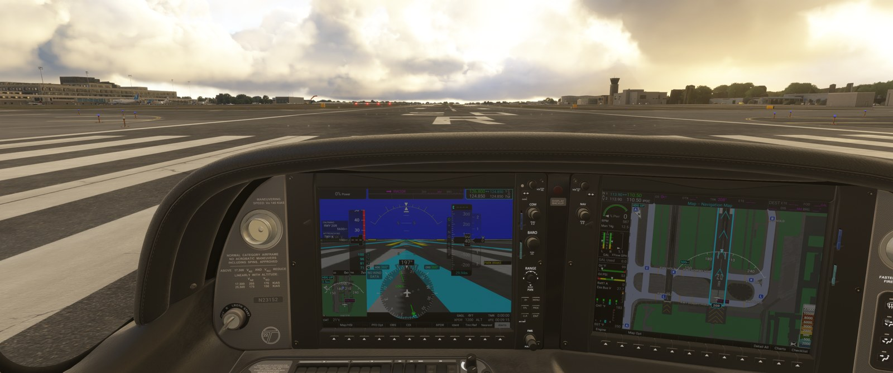

SR20 Realism Mod: user manual
This is the manual for the SR20 Realism Mod 1.0.0, a Cirrus SR20 G6 for Microsoft Flight Simulator 2024.
The mod turns the sim's own Cirrus SR22T into an SR20 G6 with Perspective+ avionics, no ice protection and no oxygen. It keeps the stock 3D model, cockpit and Working Title G1000 NXi, and changes what makes an SR20 fly and read like one: the engine, weights, fuel, systems, displays, alerts and a long list of avionics behaviours. On top of that it adds a training tool, the Instructor Station, for failures and approach practice.

This is a flight simulation add-on. Nothing in this manual is real-world flight training, and none of it replaces the Pilot's Operating Handbook, the Garmin Pilot's Guide or an instructor.
How to use this manual
Each chapter covers one area. For every feature it says what the feature does, where to find it in the cockpit, how to turn it on and off, what you see and hear, and where it differs from the real aircraft.
| Chapter | Read it for |
|---|---|
| Installing and first flight | The installer, installing by hand, the first-flight check, upgrading and uninstalling |
| Aircraft and systems | Flight model, engine, fuel, engine page, CAS alerts, electrical system, circuit breakers, checklists |
| Terrain, surface and protection systems | TAWS-B, obstacles, SurfaceWatch, SafeTaxi, glide and fuel range rings, ESP, speed protection, voice alerts |
| Autopilot, flight plan and connected devices | Autopilot and G1000 behaviour, autopilot disconnect, Navigraph charts, the iPad and ForeFlight link, the RealSimGear yoke |
| Instructor Station | Failures, scoring, approach setup, weather, debrief |
| The SR20 Companion and troubleshooting | The background helper program, its tray icon, network use, problems and fixes, known limitations |
The box at the top of the menu filters the section list. Type a word such as "glide" or "breaker".
What you need
- Microsoft Flight Simulator 2024 with the stock Cirrus SR22T.
- Windows, for the SR20 Companion. The Companion is optional and recommended: see below.
- Navigraph charts are optional. They need Navigraph's own plugin and subscription.
The two parts of the mod
The aircraft is a package in the sim's Community2024 folder. It works on its own.
The SR20 Companion is a small Windows program that runs beside the sim and shows an icon by the clock. It supplies the things a sim aircraft cannot do by itself: real terrain for TAWS-B and the glide range ring, airport maps for airports outside the 50 that are included, the iPad and ForeFlight link, the RealSimGear Cirrus yoke feel, and the terrain check when the Instructor Station starts you at a fix. Features that need it are marked "needs the Companion" throughout this manual. Without it, everything else still works, and TAWS shows TAWS FAIL.
Quick start
- Close the sim and run the installer. See Installing and first flight.
- Start the sim and pick Cirrus SR20 G6 (SR20 Realism Mod).
- Check that the Companion's tray icon is green, then work through the first flight check list (power up the avionics and let the TAWS test finish).
- In the cockpit, the sim toolbar has two new panels: Instructor Station and SR20 Breakers (the circuit breaker panel).
- Fly it like the real aircraft. When you want practice, open the Instructor Station and set up an approach or arm a failure.
Where things are
| You want to | Go to |
|---|---|
| Switch the glide range ring or fuel range ring on or off | MFD navigation map, MENU, Map Settings, Map group. See range rings |
| See terrain alerts on a map | MFD Map group, TAWS-B page. See TAWS-B |
| Inhibit TAWS or SurfaceWatch | TAWS-B page softkey, and Aux - System Setup 1. See protection systems |
| Turn ESP off | Aux - System Setup 2. See ESP |
| Pull a circuit breaker | Sim toolbar, SR20 Breakers. See circuit breakers |
| Practise an approach or a failure | Sim toolbar, Instructor Station. See Instructor Station |
| Send a flight plan from ForeFlight | ForeFlight, Share FPL File, Send to SR20. See iPad and ForeFlight |
| Check why something is not working | Troubleshooting |
What this mod is not
- It is not a perfect flight model. It was tuned against the SR20 G6 POH numbers and flown by a pilot who flies the real aircraft, and it is close enough for procedures and flows.
- It has no exterior or cockpit artwork of its own. The 3D model is the stock SR22T, so the cockpit still shows the ice protection and oxygen controls of that aircraft. They do nothing.
- It does not include every Perspective+ function. The chapters say where the mod stops.
Credits and licence
By wazooda. The aircraft package is under CC BY-NC 4.0 for the parts made for this mod. The SR20 Companion is under the AGPL-3.0, and its source is at github.com/wazooda/SR20-Companion.
The base aircraft, 3D model and G1000 NXi avionics are the stock Microsoft Flight Simulator 2024 Cirrus SR22T by Microsoft, Asobo and Working Title. Terrain: Copernicus DEM GLO-90, © DLR e.V. 2010-2014 and © Airbus Defence and Space GmbH 2014-2018, provided under COPERNICUS by the European Union and ESA. Obstacles: FAA Digital Obstacle File. Taxiway names: © OpenStreetMap contributors (ODbL).
Not affiliated with or endorsed by Cirrus Aircraft or Garmin. Cirrus, SR20, Perspective+ and G1000 are trademarks of their owners.